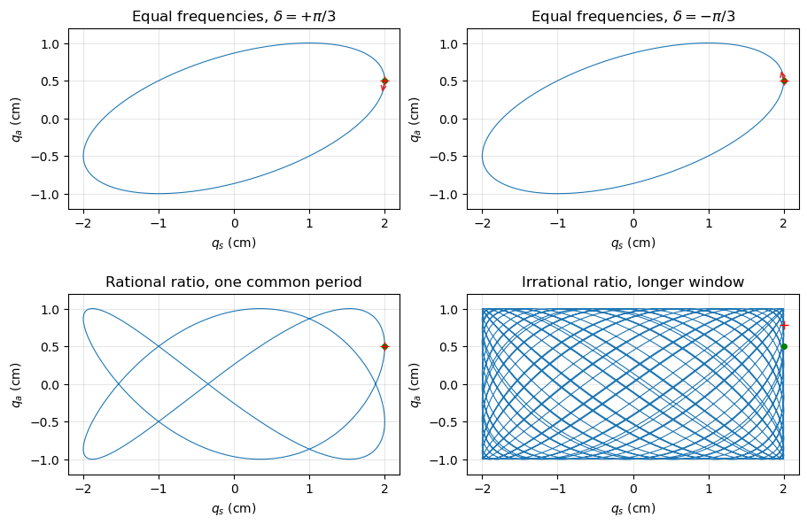
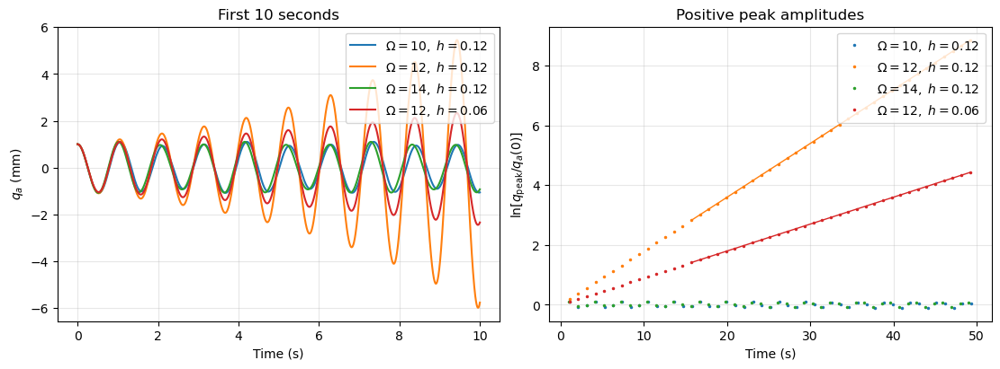
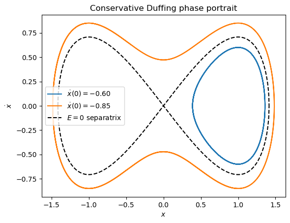
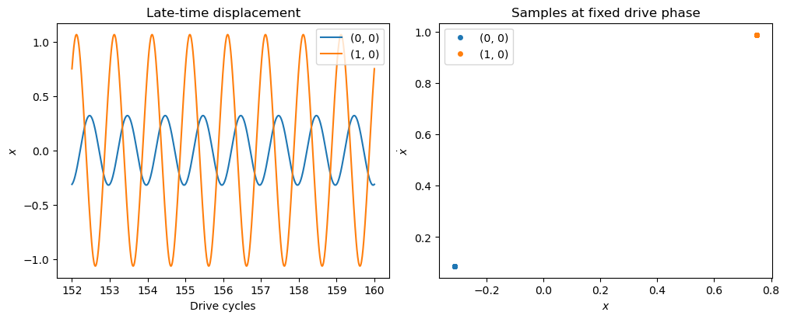
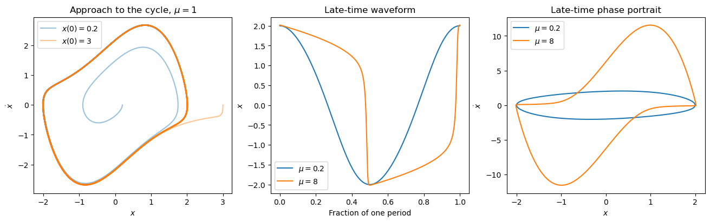
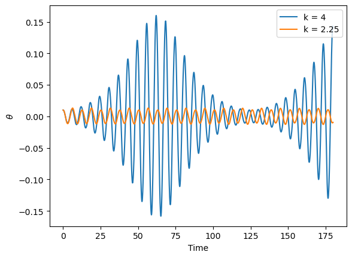
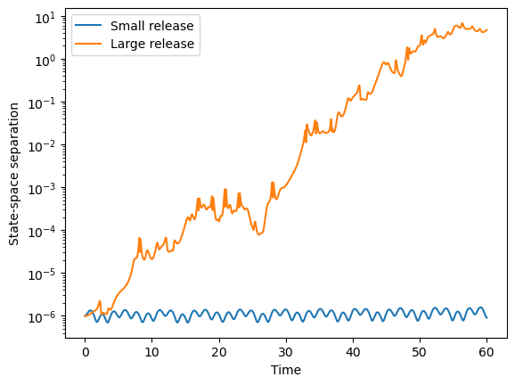
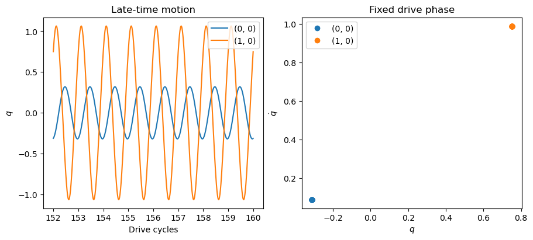
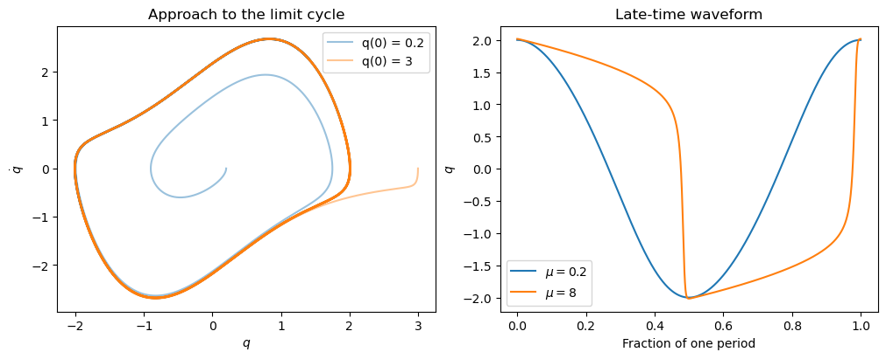

B Exam Practice#
Problem 1 - From Mass Distribution to Rotational Stability - A Spacecraft in Free Rotation#
An engineer uses two coordinate systems to describe a spacecraft rotating about its center of mass. The assembly frame \(A\) is attached to the spacecraft and is used to record mass positions. The principal-axis body frame \(B\) is also attached to the spacecraft. Its axes are ordered so that \(I_1<I_2<I_3\). The space frame \(S\) is inertial.
The engineer has calculated the following inertia tensor about the center of mass in the assembly frame, with one entry still to be filled in.
Two \(0.50\,\mathrm{kg}\) calibration masses are located at \((1,1,0)\,\mathrm m\) and \((-1,-1,0)\,\mathrm m\) in frame \(A\). They are the only parts of the spacecraft that contribute to \(I_{xy}\). Their contributions to the diagonal entries have already been included.
At the instant the attitude-control system is switched off, the orientation of the principal-axis body frame \(B\) relative to \(S\) is described by the intrinsic \(ZXZ\) Euler angles
After the system is switched off, the net external torque about the center of mass is zero.
Inertia tensor and principal axes. Find \(q\) and explain why the two mass contributions add. Find the three principal moments and choose a right-handed principal-axis basis. Take \(\hat{\mathbf e}_1\) to have a positive \(x_A\) component and \(\hat{\mathbf e}_2\) to point along \(+\hat{\mathbf z}_A\).
Euler angles and angular velocity. Sketch \(\hat{\mathbf z}_S\), the line of nodes \(\hat{\mathbf n}\), and \(\hat{\mathbf e}_3\). Find the body-to-space rotation matrix \(R\) from the directions of the three body axes. Use the Euler-angle rates to find \([\boldsymbol{\omega}]_S\) and \([\boldsymbol{\omega}]_B\).
Angular momentum and energy. Find \([\mathbf L]_B\), \([\mathbf L]_S\), and the rotational kinetic energy. Explain whether \(\mathbf L\) and \(\boldsymbol{\omega}\) are parallel.
Torque-free dynamics. At the instant after switch-off, find \(d[\mathbf L]_S/dt\), \(d[\mathbf L]_B/dt\), and \(d[\boldsymbol{\omega}]_B/dt\). Explain how the body components of \(\mathbf L\) can change during torque-free motion.
Stability of a different release. Suppose the spacecraft is prepared for a separate trial with a spin \(\Omega\) about \(\hat{\mathbf e}_2\) and small transverse errors. Use the torque-free Euler equations to determine whether those errors grow or oscillate. Repeat the sign check for a spin about \(\hat{\mathbf e}_3\).
Oral follow-up. At the angular velocity in part 2, what torque would keep all three body components of \(\boldsymbol{\omega}\) instantaneously constant? Would that torque change the rotational kinetic energy at that instant?
Problem solution
1. Complete the tensor and find the principal axes.
The off-diagonal entry is \(I_{xy}=-\sum_a m_a x_a y_a\). Both masses have \(x_a y_a=+1\,\mathrm{m^2}\). Reversing both coordinates leaves their product unchanged, so each contributes \(-0.50\,\mathrm{kg\,m^2}\). Thus \(q=-1\).
In the \(xy\) block, multiplying by a vector with equal components gives an eigenvalue of \(4-1=3\). Opposite components give \(4+1=5\). The \(z_A\) direction has eigenvalue \(4\) because it has no off-diagonal coupling. Ordering the axes by increasing moment gives
The sign of \(\hat{\mathbf e}_3\) follows from \(\hat{\mathbf e}_1\times\hat{\mathbf e}_2=\hat{\mathbf e}_3\). The tensor in this principal-axis basis is \(\mathbf I_B=\operatorname{diag}(3,4,5)\,\mathrm{kg\,m^2}\).
2. Use the Euler rotations to find the axes and the angular velocity.
For the Euler-angle construction, begin with \(B\) aligned with \(S\). Because \(\phi=0\), the line of nodes is \(\hat{\mathbf n}=\hat{\mathbf x}_S\). The \(+90^\circ\) rotation about \(\hat{\mathbf n}\) carries \(\hat{\mathbf y}_S\) to \(\hat{\mathbf z}_S\) and \(\hat{\mathbf z}_S\) to \(-\hat{\mathbf y}_S\). The intermediate axes therefore point along
The final \(+90^\circ\) rotation about the third intermediate axis carries the first intermediate axis into the second, and the second into the negative of the first. The final body axes are
The columns of \(R\) are these three body axes written in space components. Each column tells us where one unit body vector points in space.
Each angle rate contributes about its own instantaneous axis. In particular, \(\dot\phi\) contributes even though \(\phi=0\) at this instant.
Consequently,
The negative second body component follows from \(\hat{\mathbf e}_2=-\hat{\mathbf x}_S\). As a check, both component lists give \(|\boldsymbol{\omega}|=\sqrt{14}\,\mathrm{rad/s}\).
3. Find angular momentum and rotational kinetic energy.
The diagonal inertia tensor scales each body component by its principal moment.
The component ratios \(L_i/\omega_i\) are \(3\), \(4\), and \(5\) in SI units. Since one common multiplier would be required for parallel vectors, \(\mathbf L\) and \(\boldsymbol{\omega}\) are nonparallel. In space components,
The energy is a scalar. Using body components,
Using space components gives the same dot product, \(1(4)+(-3)(-15)+2(6)=61\).
4. Apply the inertial torque law and the transport theorem.
Zero external torque gives \(d[\mathbf L]_S/dt=\mathbf 0\). To obtain the derivative of the body components, apply the transport theorem with all terms expressed in the body basis.
The left side is zero. The cross product on the right accounts for the turning of the basis vectors. Thus
The spacecraft’s axes rotate relative to the fixed angular momentum vector. Its projections onto those axes therefore change.
Because \(\mathbf I_B\) is constant, \(d[\mathbf L]_B/dt=\mathbf I_B\,d[\boldsymbol{\omega}]_B/dt\). Dividing component by component gives
The changing components still give zero rotational power. Differentiating the energy gives \(\dot T_{\mathrm{rot}}=2(3)+(-1)(12)+3(2)=0\) in SI units.
5. Compare spins about the intermediate and largest principal axes.
The torque-free Euler equations have the form
An exact spin about either principal axis persists because each product on the right contains a zero factor. To test whether a small error grows, first take \((\omega_1,\omega_2,\omega_3)=(\delta_1,\Omega,\delta_3)\) to first order. The equation for \(\dot\omega_2\) is proportional to \(\delta_3\delta_1\), so the main spin component is constant at this order. Keeping one factor of the small error in the other two equations gives
Differentiate the first equation and substitute the second.
The positive coefficient gives an exponential solution with a growing term proportional to \(e^{|\Omega|t/\sqrt{15}}\). A generic small error excites that term, so spin about the intermediate axis is unstable.
For a spin about \(\hat{\mathbf e}_3\), write \((\omega_1,\omega_2,\omega_3)=(\delta_1,\delta_2,\Omega)\) to first order. The transverse equations now give
The negative coefficient gives bounded oscillations of the small errors. The largest-axis spin is stable under this linearized analysis.
Oral follow-up.
To hold all body components of \(\boldsymbol{\omega}\) constant, set \(d[\mathbf L]_B/dt=\mathbf 0\) in the body-frame torque equation. The torque must then supply the change due to the turning of the basis.
This torque is perpendicular to \(\boldsymbol{\omega}\) because it is a cross product with \(\boldsymbol{\omega}\). Its instantaneous power is zero, so it changes the direction of angular momentum in space without changing the rotational kinetic energy.
Problem 2 - From Lissajous Figures to Parametric Resonance#
Two identical carts of mass \(m=1.0\,\mathrm{kg}\) move along a horizontal track. Each cart is attached to a wall by a spring of stiffness \(k=16\,\mathrm{N/m}\). An adjustable spring of stiffness \(k_c\) connects the carts. Both displacements are measured positive to the right from equilibrium. Neglect damping and assume that changing \(k_c\) leaves the equilibrium positions fixed.
The displacement sensors measure \(x_1(t)\) and \(x_2(t)\). The software displays either the cart coordinates \((x_1,x_2)\) or the normal coordinates \((q_s,q_a)\), where
For each part, make a prediction before using the laptop. Be ready to explain which features of your plot follow from the equations and which depend on the time window.
Normal modes. Use the extension of the connecting spring to derive the equations for \(q_s\) and \(q_a\). Explain why changing \(k_c\) affects only one mode. For \(k_c=10\,\mathrm{N/m}\), give a release from rest that excites only that mode.
Read the phase from an XY trace. With the coupling turned off, the mode amplitudes are \(A_s=2.0\,\mathrm{cm}\) and \(A_a=1.0\,\mathrm{cm}\). At the positive maximum of \(q_s\), the display shows \(q_a=+0.50\,\mathrm{cm}\) and the time trace shows that \(q_a\) is decreasing. Find the phase difference \(\delta=\phi_a-\phi_s\). Eliminate time to find the equation of the XY trace. Predict what happens to the shape and the direction of traversal if \(\delta\) changes sign.
Predict exact repetition. In two new runs, set the constant coupling to \(10\,\mathrm{N/m}\) and then to \(8\,\mathrm{N/m}\). Use the same amplitudes and phase constants as in part 2. For each run, decide whether the complete motion repeats exactly. Find the shortest repeat time when one exists. Plot both traces and explain why a crossing or an apparent return on the screen cannot establish a period.
Transfer energy by modulating the coupling. Set the mean coupling to \(10\,\mathrm{N/m}\) and modulate it according to $\( k_c(t)=10\,\mathrm{N/m}+(18\,\mathrm{N/m})h\sin(\Omega t), \qquad h=0.12. \)\( Write the equation for \)q_a\( and find the primary parametric resonance frequency. Derive the rate of change of the mechanical energy in the antisymmetric mode. At primary resonance, compare the average energy transfer over one cycle for \)q_a\approx A\cos(\omega_{a0}t)\( and \)q_a\approx A\sin(\omega_{a0}t)\(, where \)\omega_{a0}$ is the natural angular frequency at the mean coupling.
Measure the instability. Start the modulated runs with \(q_a(0)=1.0\,\mathrm{mm}\) and \(\dot q_a(0)=0\). Simulate \(\Omega=10\), \(12\), and \(14\,\mathrm{rad/s}\). Use the positive displacement peaks to estimate the growth rate for the growing case. Compare it with \(\sigma\approx h\omega_{a0}/4\) and predict how the rate changes if \(h\) is halved.
Oral follow-up. An experimenter prepares a pure symmetric oscillation and then switches on the coupling modulation at the primary resonance frequency of the antisymmetric mode. What happens to each mode in the ideal model? What changes if the release introduces a small antisymmetric error?
Problem solution
1. Derive the normal-mode equations.
The change in length of the connecting spring is \(x_2-x_1\). When this quantity is positive, the stretched spring pulls cart 1 to the right and cart 2 to the left. Including the wall springs, Newton’s second law gives
Add the equations and divide by two to obtain the symmetric equation. Subtract the second equation from the first and divide by two to obtain the antisymmetric equation.
For symmetric motion, \(x_1=x_2\), so the connecting spring does not change length. For antisymmetric motion, \(x_2=-x_1\), so the connecting spring changes length by twice the signed displacement of cart 2. This gives the extra \(2k_c\) in the antisymmetric restoring term.
With constant coupling,
At \(k_c=10\,\mathrm{N/m}\), \(\omega_a=6\,\mathrm{rad/s}\). A pure antisymmetric release is \(x_1(0)=+1\,\mathrm{cm}\), \(x_2(0)=-1\,\mathrm{cm}\), with both carts at rest. Then \(q_s(0)=\dot q_s(0)=0\), so the symmetric mode stays unexcited.
2. Infer the phase and derive the trace.
With \(k_c=0\), both frequencies equal \(\omega_s\). Choose \(t=0\) at the positive maximum of \(q_s\). Then
The measured position gives \(\cos\delta=q_a(0)/A_a=1/2\). Both \(+\pi/3\) and \(-\pi/3\) give that position. The velocity \(\dot q_a(0)=-A_a\omega_s\sin\delta\) is negative, so \(\sin\delta>0\) and \(\delta=+\pi/3\). The antisymmetric signal leads the symmetric signal by \(60^\circ\).
To eliminate time, set \(X=q_s/A_s\), \(Y=q_a/A_a\), and \(u=\omega_st\). The cosine addition formula gives \(Y=X\cos\delta-\sin u\sin\delta\). Squaring the expression for \(\sin u\sin\delta\) and using \(\sin^2u=1-X^2\) gives
This is a tilted ellipse. At the rightmost point, \(q_a\) is decreasing, so the point moves down from there and traverses the ellipse clockwise. Reversing \(\delta\) leaves \(\cos\delta\) and \(\sin^2\delta\) unchanged, so the geometric curve stays the same. It reverses \(\dot q_a(0)\) and the direction of traversal. The time trace supplies information that the static ellipse alone does not provide.
3. Apply the common-period condition.
A repeat of the complete motion requires both phases to advance by whole numbers of cycles. Equivalently, both coordinates and both velocities must return to their original values.
For \(k_c=10\,\mathrm{N/m}\), the frequencies are \(4\) and \(6\,\mathrm{rad/s}\). Their ratio is \(\omega_s:\omega_a=2:3\). The shortest repeat occurs after two symmetric cycles and three antisymmetric cycles.
The phase constants affect the geometry but cancel out of the phase advances \(\omega_sT\) and \(\omega_aT\).
For \(k_c=8\,\mathrm{N/m}\),
Any exact repeat would make this frequency ratio a ratio of integers. Because \(\sqrt{2}\) is irrational, there is no finite common period. A plotted crossing only tells us that the two coordinates agree at those times. The velocities can differ. An apparent return can also occur because two distinct points are closer than the plot resolution. A longer simulation illustrates the difference between the two traces, while the frequency ratio establishes exact repetition or its absence.
4. Derive the modulated equation and the energy balance.
The normal-coordinate equations still apply with \(k_c\) replaced by \(k_c(t)\). The symmetric equation is unchanged because the connecting spring forces cancel when the cart equations are added. For the antisymmetric mode,
Therefore,
This is parametric modulation because the periodic term multiplies \(q_a\). A direct sinusoidal force would appear as an additive term. The primary parametric resonance is near \(\Omega=2\omega_{a0}=12\,\mathrm{rad/s}\).
For the actual mechanical energy of the antisymmetric mode, set \(x_1=q_a\) and \(x_2=-q_a\). The two carts contribute a total kinetic energy \(m\dot q_a^2\). The two wall springs contribute \(kq_a^2\), and the connecting spring contributes \(\tfrac12 k_c(t)(-2q_a)^2=2k_c(t)q_a^2\). Thus
Differentiating and substituting the equation of motion gives
Stiffening adds energy, and softening removes it. For a given magnitude of \(\dot k_c\), the transfer is largest near a turning point and zero at an equilibrium crossing.
At exact primary resonance, put \(u=\omega_{a0}t\). Differentiating the specified stiffness gives \(\dot k_c=m\omega_{a0}^3h\cos(2u)\). For the cosine motion, \(\cos^2u=(1+\cos 2u)/2\), so
The average of \(\cos(2u)\) is zero and the average of \(\cos^2(2u)\) is \(1/2\). For the sine motion, \(\sin^2u=(1-\cos 2u)/2\), which reverses the sign.
These are one-cycle estimates for weak modulation. The cosine motion has its turning points during stiffening. The sine motion has its turning points during softening. This explains why the phase of the oscillation relative to the modulation matters.
5. Measure the growth rate and interpret the simulation.
Use \(v_a=\dot q_a\) to give the solver two first-order equations,
At \(\Omega=12\,\mathrm{rad/s}\), the positive peaks should show sustained growth. The two detuned runs can show variation in peak height, but should show no sustained exponential growth over the simulated window.
If the positive peaks follow \(q_{\mathrm{peak}}\approx C e^{\sigma t}\), then
The slope of this dimensionless log-amplitude against time is the amplitude growth rate in \(\mathrm{s^{-1}}\). Fit the later peaks, since the initial conditions can excite both a growing and a decaying component. At the stated parameters,
Halving \(h\) gives a prediction of \(0.090\,\mathrm{s^{-1}}\). The numerical slopes at resonance should be close to these values. The approximation also agrees with the energy argument in part 4. To leading order the growing cosine motion has \(E_a\approx m\omega_{a0}^2A^2\), so an amplitude growing at rate \(\sigma\) gives \(\dot E_a\approx 2\sigma E_a\). Equating this to the positive average power from part 4 gives \(\sigma\approx h\omega_{a0}/4\).
Oral follow-up.
A pure symmetric release has \(q_a(0)=\dot q_a(0)=0\). The antisymmetric equation is homogeneous, so \(q_a\) stays exactly zero. The symmetric mode continues oscillating at \(4\,\mathrm{rad/s}\). At primary resonance, a generic small antisymmetric release error excites the growing solution, even though the exact zero solution persists. This is the distinction between the existence of a solution and its stability.
import numpy as np
import matplotlib.pyplot as plt
omega_s = 4.0
amplitude_s, amplitude_a = 2.0, 1.0 # cm
phase = np.pi / 3
cases = [
(4, phase, np.pi / 2, r"Equal frequencies, $\delta=+\pi/3$"),
(4, -phase, np.pi / 2, r"Equal frequencies, $\delta=-\pi/3$"),
(6, phase, np.pi, "Rational ratio, one common period"),
(4 * np.sqrt(2), phase, 12 * np.pi, "Irrational ratio, longer window"),
]
fig, axes = plt.subplots(2, 2, figsize=(9, 6), constrained_layout=True)
for ax, (omega_a, delta, duration, title) in zip(axes.flat, cases):
t = np.linspace(0, duration, 12_001)
q_s = amplitude_s * np.cos(omega_s * t)
q_a = amplitude_a * np.cos(omega_a * t + delta)
ax.plot(q_s, q_a, linewidth=0.8)
ax.plot(q_s[0], q_a[0], "go", markersize=4)
ax.plot(q_s[-1], q_a[-1], "r+", markersize=7)
if omega_a == omega_s:
ahead = np.searchsorted(t, 0.05)
ax.annotate(
"", xy=(q_s[ahead], q_a[ahead]), xytext=(q_s[0], q_a[0]),
arrowprops={"arrowstyle": "->", "color": "tab:red"},
)
ax.set(xlabel=r"$q_s$ (cm)", ylabel=r"$q_a$ (cm)", title=title,
aspect="equal", xlim=(-2.2, 2.2), ylim=(-1.2, 1.2))
ax.grid(alpha=0.3)
plt.show()

import numpy as np
import matplotlib.pyplot as plt
from scipy.integrate import solve_ivp
from scipy.signal import find_peaks
omega_a0 = 6.0
initial_displacement = 1e-3 # m
t = np.linspace(0, 50, 10_001)
cases = [(10, 0.12), (12, 0.12), (14, 0.12), (12, 0.06)]
fig, axes = plt.subplots(1, 2, figsize=(11, 4), constrained_layout=True)
for frequency, depth in cases:
def equations(time, state):
displacement, velocity = state
stiffness_per_mass = omega_a0**2 * (1 + depth * np.sin(frequency * time))
return velocity, -stiffness_per_mass * displacement
result = solve_ivp(
equations, (t[0], t[-1]), (initial_displacement, 0),
t_eval=t, rtol=1e-9, atol=1e-12,
)
displacement = result.y[0]
label = rf"$\Omega={frequency},\ h={depth}$"
early = t <= 10
axes[0].plot(t[early], 1000 * displacement[early], label=label)
peaks, _ = find_peaks(displacement, height=0)
peak_times = t[peaks]
log_amplitude = np.log(displacement[peaks] / initial_displacement)
line, = axes[1].plot(peak_times, log_amplitude, ".", markersize=3, label=label)
if frequency == 2 * omega_a0:
later = peak_times >= 15
slope, intercept = np.polyfit(peak_times[later], log_amplitude[later], 1)
axes[1].plot(
peak_times[later], slope * peak_times[later] + intercept,
color=line.get_color(), linewidth=1,
)
predicted_rate = depth * omega_a0 / 4
print(f"h = {depth:.2f}: fitted {slope:.4f} s^-1, "
f"predicted {predicted_rate:.4f} s^-1")
axes[0].set(xlabel="Time (s)", ylabel=r"$q_a$ (mm)", title="First 10 seconds")
axes[1].set(xlabel="Time (s)", ylabel=r"$\ln[q_{\mathrm{peak}}/q_a(0)]$",
title="Positive peak amplitudes")
for ax in axes:
ax.grid(alpha=0.3)
ax.legend(loc="upper right")
plt.show()
h = 0.12: fitted 0.1799 s^-1, predicted 0.1800 s^-1
h = 0.06: fitted 0.0900 s^-1, predicted 0.0900 s^-1

Problem 3 - One Test Bench, Three Types of Oscillation#
A laboratory test bench uses a motor to control the force on a cart. By changing the controller settings, the same cart can mimic a pendulum, a Duffing oscillator, or a Van der Pol oscillator. All equations below use dimensionless time and coordinates. In the pendulum setting, interpret \(x\) as the angle in radians. In the other settings, interpret \(x\) as the cart displacement.
For each setting, make a prediction before running the simulation. Then use the result to explain what determines the period, whether the motion depends on the initial state, and where energy comes from or goes.
A. Pendulum setting — Does the release angle affect the period?#
The controller imposes \(\ddot x+\sin x=0\). Compare releases from rest at \(15^\circ\) and \(75^\circ\).
Linearize about \(x=0\) and find the small-angle period. Use the first nonlinear correction to explain which release should have the longer period. Would adding two exact solutions generally give another solution?
Laptop task. Measure the time to the first equilibrium crossing for each release. Explain why you can multiply this time by four to obtain the period.
B. Duffing setting — Can the cart cross from one well to the other?#
In the first Duffing test, the controller imposes \(\ddot x-x+x^3=0\). The cart starts at \(x=1\) with velocity directed toward the origin.
Find the potential energy and classify the equilibria. Find the critical initial speed that separates motion confined to the right well from motion that visits both wells.
Laptop task. Compare the phase-space trajectories for \(\dot x(0)=-0.60\) and \(\dot x(0)=-0.85\). Explain how the energy predicts the shape of each trajectory. What happens at exactly the critical speed?
C. Driven Duffing setting — Can one drive produce two steady responses?#
The controller switches to a single-well restoring force and adds damping and a periodic drive,
At \(\Omega=1.30\), compare releases from \((x,\dot x)=(0,0)\) and \((1,0)\). Both runs start at the same phase of the drive.
Explain whether the oscillator hardens or softens. Predict which way its resonance curve bends.
Laptop task. Estimate both late-time amplitudes. Sample each run once per drive period at a fixed drive phase. Explain how these samples help distinguish two steady responses from a long transient.
Explain how a slow upward or downward frequency sweep could produce jumps at different frequencies. How does this kind of bistability differ from the behavior in part B?
D. Van der Pol setting — Can oscillations persist after the periodic drive is removed?#
The controller replaces the periodic drive with velocity-dependent feedback,
Derive the rate of change of \(E=\tfrac12(\dot x^2+x^2)\) and identify the regions where the feedback adds or removes energy. For \(\mu=1\), predict what happens to releases from rest at \(x=0.2\) and \(x=3\).
Laptop task. Compare the two phase portraits. Explain how the energy balance on the resulting orbit differs from the energy balance along a closed orbit in part B.
Compare one late cycle for \(\mu=0.2\) and \(\mu=8\). Identify the evidence for relaxation oscillation. Use \(z=x-x^3/3-\dot x/\mu\) to explain where the slow portions end and the rapid transitions begin.
Oral follow-up. If the Van der Pol oscillator is released exactly from \((0,0)\), will it start oscillating? Explain how your answer is consistent with self-sustained oscillation.
Problem solution
A. The pendulum period grows with release angle.
Near the origin, \(\sin x=x-x^3/6+\cdots\). Keeping only the linear term gives \(\ddot x+x=0\), so the small-angle period is \(T_0=2\pi\). The cubic correction reduces the restoring acceleration magnitude on either side of equilibrium. At a large amplitude, that reduction is appreciable. The restoring force grows less rapidly with displacement than the linear model predicts, which is characteristic of a softening oscillator.
More explicitly, let \(a\) be the release angle and write \(x=au\). For the first leg from \(u=1\) to \(u=0\), the restoring acceleration in the normalized coordinate is \(-\sin(au)/a\). At any fixed \(0<u\leq1\), its magnitude is smaller for the \(75^\circ\) release than for the \(15^\circ\) release. Starting from rest, the larger-angle trial accumulates less speed in \(u\) over the same normalized displacement and takes longer to reach equilibrium.
The exact potential \(1-\cos x\) is symmetric, and the pendulum is conservative. It spends equal times on the four legs between turning points and equilibrium crossings. Therefore \(T=4t_{\rm cross}\). The simulations give approximately \(T=6.310\) for \(15^\circ\) and \(T=7.047\) for \(75^\circ\), compared with \(T_0=6.283\).
Superposition fails because in general \(\sin(x_1+x_2)\ne\sin x_1+\sin x_2\). The accelerations add, but the restoring terms evaluated on the summed displacement do not.
B. The conserved energy determines whether the cart crosses the barrier.
For \(\ddot x=x-x^3\), the potential satisfies \(-U'(x)=x-x^3\). Taking \(U(0)=0\) gives
The stationary points are \(x=0\) and \(x=\pm1\). The second derivative is \(U''=-1+3x^2\). Thus \(x=0\) is a potential maximum and a saddle in phase space. The points \(x=\pm1\) are minima and centers. Nearby orbits circle the centers at fixed energy.
At \(x=1\), \(U=-1/4\). At the top of the barrier, \(U(0)=0\). The critical launch therefore has
For the two specified velocities,
The lower-energy orbit cannot reach \(x=0\) because that would require negative kinetic energy. It closes around \((1,0)\). The higher-energy orbit passes through \(x=0\) with speed \(\sqrt{2E}\approx0.472\) and closes around both wells. At the critical speed, the incoming orbit lies on the separatrix \(E=0\). On the approach to the origin from \(x>0\),
The cart approaches the saddle asymptotically, so the critical launch does not cross in finite time.
C. Initial conditions can select different periodic responses to the same drive.
The cubic restoring force \(-x^3\) acts toward equilibrium and grows faster than the linear force \(-x\). The oscillator hardens. To see why the response bends toward higher frequencies, try \(x\approx A\cos u\) with \(u=\Omega t-\varphi\). Then
Keeping the fundamental gives an effective restoring coefficient \(1+3A^2/4\). It increases with amplitude, so the larger-amplitude response bends toward higher drive frequencies.
Measure the amplitude as half the peak-to-peak displacement over the last several drive cycles. The two runs at \(\Omega=1.30\) give approximately \(0.319\) and \(1.064\). At the end of each run, sample \((x,\dot x)\) at the same drive phase on consecutive cycles. A period-one response repeats that state each cycle. Here each trial’s samples cluster near a different point. Extending the simulation checks that the difference persists. Restarting near each late state, at the same drive phase, checks whether nearby states return to that response.
In a slow frequency sweep, the system can follow its current stable response branch until that branch ends. The amplitude then jumps to the remaining branch. Starting from the other side of the coexistence interval can lead to a different jump frequency. The dependence on sweep history is hysteresis.
In part B, the two potential wells and the conserved energy determine which positions are accessible. Here the potential \(U=x^2/2+x^4/4\) has a single minimum. The bistability is between two attracting periodic responses maintained by the drive. Each repeats because the drive supplies, on average, the energy that damping removes.
D. Amplitude-dependent feedback creates an attracting limit cycle.
Differentiate the mechanical energy and substitute the equation of motion.
While the cart is moving, feedback supplies energy for \(|x|<1\) and removes it for \(|x|>1\). The power is zero at a turning point because \(\dot x=0\). For \(\mu=1\), the small release first gains energy once it begins moving, while the large release first loses energy. Over successive cycles, both trajectories approach the same closed curve. Their energy need not change monotonically because each trajectory can visit both regions.
On the limit cycle the state repeats, so \(E(t+T)=E(t)\) and the energy supplied and removed over a cycle balance. The energy still varies during the cycle. In part B, the energy is constant at every instant and nearby orbits stay on their own energy contours. Here nearby trajectories approach a selected periodic orbit.
For \(\mu=0.2\), the waveform is nearly sinusoidal and the period is close to \(2\pi\). At \(\mu=8\), compare the waveforms on the scaled time axis \(t/T\). The cart spends a large fraction of the cycle moving slowly along the outer parts of the orbit and crosses between them in a short fraction of the period. The phase portrait shows large \(|\dot x|\) during those transitions. These features identify relaxation oscillation.
From the definition of \(z\) and the equation of motion,
For large \(\mu\), \(z\) changes slowly. The fast \(x\) dynamics are locally attracting on the outer branches of the cubic \(z=x-x^3/3\), because the derivative of \(\dot x\) with respect to \(x\) at fixed \(z\) is \(\mu(1-x^2)<0\) there. On the right branch \(\dot z>0\), so the motion drifts toward the fold at \(x=1\). On the left branch \(\dot z<0\), so it drifts toward the fold at \(x=-1\). Near a fold the attracting branch ends, and \(x\) makes a rapid transition to the opposite outer branch while \(z\) changes relatively little.
Oral follow-up. The exact release \((0,0)\) stays at rest because the acceleration and velocity are both zero there. Near the origin, the leading equation is \(\ddot x-\mu\dot x+x=0\). The negative damping makes the equilibrium unstable. A small disturbance can therefore grow until the nonlinear energy loss at larger amplitudes limits the motion.
# Parts A and B — Pendulum periods and conservative Duffing trajectories
import numpy as np
import matplotlib.pyplot as plt
from scipy.integrate import solve_ivp
def pendulum(time, state):
angle, speed = state
return speed, -np.sin(angle)
def downward_crossing(time, state):
return state[0]
downward_crossing.direction = -1
downward_crossing.terminal = True
for angle in [15, 75]:
result = solve_ivp(
pendulum, (0, 10), (np.deg2rad(angle), 0),
events=downward_crossing, rtol=1e-9, atol=1e-11,
)
print(f"{angle}° release: T = {4 * result.t_events[0][0]:.4f}")
def conservative_duffing(time, state):
x, v = state
return v, x - x**3
t = np.linspace(0, 25, 4001)
fig, ax = plt.subplots()
for initial_speed in [-0.60, -0.85]:
result = solve_ivp(
conservative_duffing, (0, t[-1]), (1, initial_speed),
t_eval=t, rtol=1e-9, atol=1e-11,
)
ax.plot(*result.y, label=rf"$\dot x(0)={initial_speed:.2f}$")
x = np.linspace(-np.sqrt(2), np.sqrt(2), 800)
speed = np.sqrt(np.maximum(x**2 - x**4 / 2, 0))
ax.plot(x, speed, "k--", label="$E=0$ separatrix")
ax.plot(x, -speed, "k--")
ax.set(xlabel="$x$", ylabel=r"$\dot x$", title="Conservative Duffing phase portrait")
ax.legend(loc="best")
plt.show()
15° release: T = 6.3102
75° release: T = 7.0306

# Part C — Two steady responses at the same drive frequency
import numpy as np
import matplotlib.pyplot as plt
from scipy.integrate import solve_ivp
omega = 1.30
drive_period = 2 * np.pi / omega
cycles = np.arange(16_001) / 100
t = cycles * drive_period
def driven_duffing(time, state):
x, v = state
return v, 0.20 * np.cos(omega * time) - 0.10 * v - x - x**3
fig, axes = plt.subplots(1, 2, figsize=(10, 4), constrained_layout=True)
for initial_state in [(0, 0), (1, 0)]:
result = solve_ivp(
driven_duffing, (0, t[-1]), initial_state,
t_eval=t, rtol=1e-8, atol=1e-10,
)
late = cycles >= 152
amplitude = np.ptp(result.y[0, late]) / 2
print(f"Initial state {initial_state}: amplitude = {amplitude:.3f}")
axes[0].plot(cycles[late], result.y[0, late], label=str(initial_state))
# With 100 time intervals per drive cycle, these samples share a drive phase.
sampled_states = result.y[:, 12_000::100]
axes[1].plot(*sampled_states, "o", markersize=4, label=str(initial_state))
axes[0].set(xlabel="Drive cycles", ylabel="$x$", title="Late-time displacement")
axes[1].set(xlabel="$x$", ylabel=r"$\dot x$", title="Samples at fixed drive phase")
for ax in axes:
ax.legend(loc="best")
plt.show()
Initial state (0, 0): amplitude = 0.319
Initial state (1, 0): amplitude = 1.064

# Part D — Limit-cycle attraction and relaxation oscillations
import numpy as np
import matplotlib.pyplot as plt
from scipy.integrate import solve_ivp
from scipy.signal import find_peaks
def simulate_van_der_pol(mu, initial_position, duration):
t = np.linspace(0, duration, round(duration / 0.005) + 1)
def oscillator(time, state):
x, v = state
return v, mu * (1 - x**2) * v - x
return solve_ivp(
oscillator, (0, duration), (initial_position, 0),
t_eval=t, rtol=1e-8, atol=1e-10,
)
fig, axes = plt.subplots(1, 3, figsize=(13, 4), constrained_layout=True)
for initial_position in [0.2, 3]:
result = simulate_van_der_pol(1, initial_position, 45)
x, v = result.y
line, = axes[0].plot(x, v, alpha=0.45, label=rf"$x(0)={initial_position}$")
late = result.t >= 35
axes[0].plot(x[late], v[late], color=line.get_color(), linewidth=2)
for mu in [0.2, 8]:
result = simulate_van_der_pol(mu, 2, 140)
x, v = result.y
peaks, _ = find_peaks(x, height=0)
start, stop = peaks[-2:]
cycle = slice(start, stop + 1)
period = result.t[stop] - result.t[start]
phase_time = (result.t[cycle] - result.t[start]) / period
label = rf"$\mu={mu}$"
print(f"mu = {mu}: period = {period:.3f}")
axes[1].plot(phase_time, x[cycle], label=label)
axes[2].plot(x[cycle], v[cycle], label=label)
axes[0].set(xlabel="$x$", ylabel=r"$\dot x$", title=r"Approach to the cycle, $\mu=1$")
axes[1].set(xlabel="Fraction of one period", ylabel="$x$", title="Late-time waveform")
axes[2].set(xlabel="$x$", ylabel=r"$\dot x$", title="Late-time phase portrait")
for ax in axes:
ax.legend(loc="best")
plt.show()
mu = 0.2: period = 6.300
mu = 8: period = 16.040

Problem 4 - Diagnose Four Types of Nonlinear Motion on One Rig#
A laboratory rig can operate as a spring pendulum, a double pendulum, or a single pendulum controlled by a programmable motor. An encoder records each angle, measured from the downward vertical. Use dimensionless units with \(g=1\). All masses and rigid rod lengths are one, and the rods and spring have negligible mass.
For each configuration, explain how you obtain the equations from the Lagrangian. Then make a prediction before using the laptop. In your final explanation, distinguish energy exchange between modes, bistability, self-sustained oscillation, and sensitive dependence on initial conditions.
A. Spring pendulum — Can radial motion excite a swing?#
A single bob hangs from a spring of natural length \(\ell_0\) and stiffness \(k\). Use \(r\) for the spring length and \(\theta\) for its angle.
Find \(T\), \(V\), and both Euler–Lagrange equations. Identify how the radial motion enters the angular equation.
Find the hanging equilibrium and both small-oscillation frequencies. Choose \(\ell_0\) so the equilibrium length is \(1\). Which setting, \(k=4\) or \(k=2.25\), is closer to primary autoparametric resonance?
Compare the two settings numerically from \((r,\theta,\dot r,\dot\theta)=(1.08,0.01,0,0)\). Plot the angular motion and check total energy. What would happen if the initial angle and angular velocity were both exactly zero?
B. Double pendulum — Can a conservative system be sensitive to its release?#
Replace the spring with a rigid rod and attach a second bob beneath the first using another rigid rod. Let \(\theta_1\) and \(\theta_2\) be the two absolute angles.
Write the bob positions and construct the Lagrangian. Explain the origin of the term containing \(\dot\theta_1\dot\theta_2\).
Derive the equations in matrix form. Compare nearby releases from rest near \((0.15,0.10)\) and near \((2.6,1.8)\). For each pair, increase only \(\theta_2(0)\) by \(10^{-6}\) in the second run. Plot the state-space separation and monitor energy conservation.
If the larger-angle pair separates rapidly, what does that establish? What further test would help you distinguish chaos from a transient episode of separation?
Using the Lagrangian with an Applied Torque
In parts A and B, you used the Euler–Lagrange equation with zero on the right-hand side. In parts C and D, the motor applies an additional torque. Use the following form of the Euler–Lagrange equation:
Here \(q\) is the generalized coordinate, \(\dot q\) is its rate of change, and \(Q_q\) is the generalized force associated with \(q\). Its meaning comes from the work done during a small displacement, \(\delta W=Q_q\,\delta q\). Since \(q\) is an angle in this problem, \(Q_q\) is a torque. A positive \(Q_q\) acts in the direction of increasing \(q\).
Build \(L=T-V\) using the effective potential specified for each setting. That potential already accounts for the restoring torque. Put the additional torque given in the problem on the right-hand side as \(Q_q\).
For example, if \(L=\tfrac12 I\dot q^2-V(q)\) and \(I\) is constant, then
so the equation of motion is
Equivalently, \(I\ddot q=-dV/dq+Q_q\). This is the rotational form of Newton’s second law. The torque \(-dV/dq\) comes from the potential, and \(Q_q\) accounts for the additional applied torque.
C. Driven Duffing setting — Can the same drive sustain two different motions?#
Remove the second bob. The controller replaces the gravitational restoring torque with an effective restoring torque \(-q-q^3\), where \(q\) is the single pendulum angle. It also applies a periodic drive and linear damping. Treat the resulting effective potential as \(V=q^2/2+q^4/4\) and the remaining generalized torque as
Derive the equation using the forced Euler–Lagrange equation. Use a single-harmonic approximation to explain which way the resonance curve bends.
At \(\Omega=1.30\), compare the late-time responses starting at \((q,\dot q)=(0,0)\) and \((1,0)\) with the same initial drive phase. Measure the amplitudes and sample both trajectories once per drive period.
Explain what two points in the combined fixed-phase plot mean. How would you distinguish this result from a period-two response? How could a frequency sweep reveal hysteresis?
D. Van der Pol setting — Can oscillation persist without a periodic drive?#
Keep the single bob. The controller now imposes a linear restoring torque \(-q\) and a velocity-dependent torque
Construct the effective Lagrangian and derive the equation of motion and \(\dot E\). Identify where the controller supplies and removes mechanical energy.
At \(\mu=1\), compare releases from rest at \(q=0.2\) and \(q=3\). What feature of the phase portrait identifies an attracting limit cycle? How is it different from a conservative closed orbit or a fixed point in the drive-phase plot from part C?
Compare the late-time waveforms for \(\mu=0.2\) and \(\mu=8\). Identify the slow portions and rapid transitions. Use \(z=q-q^3/3-\dot q/\mu\) to explain where the slow portions end.
Oral follow-up. The untouched rig is exactly at rest. Compare what starts the motion in the spring-pendulum, driven Duffing, and Van der Pol settings. For the spring pendulum, assume it is held at the specified extended length and then released with zero angular displacement.
Problem solution
A. Derive the coupled equations and identify the internal resonance.
The bob position is \((r\sin\theta,-r\cos\theta)\). Its radial and tangential velocities are perpendicular, so their squared magnitudes add. With the stated units,
For \(r\), \(\partial L/\partial\dot r=\dot r\) and \(\partial L/\partial r=r\dot\theta^2-k(r-\ell_0)+\cos\theta\). For \(\theta\), the conjugate momentum is \(r^2\dot\theta\). Taking its time derivative gives both \(r^2\ddot\theta\) and \(2r\dot r\dot\theta\). Thus,
At the hanging equilibrium, the spring balances the weight and \(r_*=\ell_0+1/k\). Thus \(\ell_0=1-1/k\). Linearizing about \(r=r_*\) and \(\theta=0\) gives \(\omega_r=\sqrt{k}\) and \(\omega_\theta=1/\sqrt{r_*}=1\). The \(k=4\) case gives the ratio \(2{:}1\), while \(k=2.25\) gives \(1.5{:}1\).
The fully linearized equations are independent. To see the parametric excitation, keep the radial oscillation in the angular equation and linearize only in \(\theta\). Setting \(u=r\theta\) and differentiating twice gives
The radial oscillation modulates the coefficient of \(u\). Near twice the angular frequency, it can amplify a small swing. The near-resonant run should show substantially more angular excitation than the detuned run. Once the swing grows, the \(r\dot\theta^2\) term feeds back into the radial motion, so treating the radial oscillation as a prescribed pump becomes less accurate.
Check the conserved total energy,
Angular growth with nearly constant total energy is consistent with redistribution of energy within the system. With \(\theta=\dot\theta=0\) exactly, the angular equation gives \(\ddot\theta=0\). The vertical trajectory remains an exact solution even near the internal resonance.
B. Derive the coupled inertia matrix and interpret trajectory separation.
The bob positions are
The lower bob’s velocity is the sum of two tangential velocities. Their dot product produces the cross term in \(T\). With \(\Delta=\theta_1-\theta_2\),
For example, \(\partial L/\partial\dot\theta_1=2\dot\theta_1+\dot\theta_2\cos\Delta\). Differentiating the second term and subtracting \(\partial L/\partial\theta_1\) leaves the velocity-squared contribution \(\dot\theta_2^2\sin\Delta\) on the left of the first equation. Applying the same procedure to \(\theta_2\) gives
Solve this system for both accelerations at each time step. Near the equilibrium the motion is approximately a superposition of two normal modes, so the smaller-angle pair should stay close over the plotted interval. The larger-angle pair can show substantially stronger separation. Wrap the angular differences before measuring that separation and check \(T+V\) independently for each trajectory.
Rapid growth over a finite interval shows sensitivity on that interval. To investigate chaos, check whether the growth persists under tighter solver tolerances and estimate a largest Lyapunov exponent over a longer run with repeated rescaling of the perturbation. A reproducibly positive exponent provides stronger evidence. For an autonomous double pendulum, another option is to plot a section at a fixed energy, recording, for example, \((\theta_1,\dot\theta_1)\) when \(\theta_2=0\) with \(\dot\theta_2>0\).
C. Distinguish coexisting periodic responses from period doubling.
The effective Lagrangian is \(L=\dot q^2/2-q^2/2-q^4/4\). With the specified generalized torque, the equation is
If \(q\approx A\cos(\Omega t-\phi)\), the fundamental component of \(q^3\) is \((3A^3/4)\cos(\Omega t-\phi)\). The effective restoring coefficient rises from \(1\) to approximately \(1+3A^2/4\). Balancing the cosine and sine coefficients and eliminating \(\phi\) gives
Larger amplitudes shift the response toward higher frequencies. This is hardening. The effective potential has only one minimum, so the two driven responses are not oscillations in separate potential wells.
At \(\Omega=1.30\), half the late-time peak-to-peak displacement gives amplitudes of about \(0.319\) and \(1.064\). Sampling \((q,\dot q)\) once per drive cycle gives one late-time point per trial. There are two points in the combined plot because there are two distinct period-one responses. A period-two response would make one trial alternate between two points.
To test for hysteresis, sweep \(\Omega\) upward and downward slowly, allowing the response time to settle and using the preceding response to initialize the next frequency. A stable branch can end and force the response to jump to the other branch. Different jump frequencies on the two sweeps would show that the response depends on sweep history.
D. Explain the limit cycle and the onset of relaxation oscillation.
For the effective linear restoring torque, \(L=\dot q^2/2-q^2/2\). The generalized torque gives
Taking \(E=(\dot q^2+q^2)/2\) and multiplying the equation by \(\dot q\) gives
The controller adds energy where \(|q|<1\) and removes energy where \(|q|>1\), provided the cart is moving. The two releases at \(\mu=1\) approach the same closed curve from different initial states. That convergence identifies an attracting limit cycle. Energy varies around the cycle, but the net change per period is zero. On a conservative closed orbit energy stays constant at every instant, and nearby trajectories stay on their own energy contours. In part C each stroboscopic point represents a whole driven cycle sampled at one phase. Here the continuous phase portrait traces the whole autonomous cycle.
At \(\mu=0.2\) the waveform is nearly sinusoidal. At \(\mu=8\), slow passages alternate with rapid transitions. From the definition of \(z\),
For large \(\mu\), \(z\) varies slowly, while \(q\) can change quickly. The outer branches of \(z=q-q^3/3\) attract the fast motion because \(\partial\dot q/\partial q=\mu(1-q^2)<0\) there. The slow drift carries the system toward a fold at \(q=+1\) or \(q=-1\). Near a fold, the attracting branch ends and \(q\) moves rapidly toward the opposite outer branch while \(z\) changes relatively little.
Oral follow-up. The stretched spring initiates radial motion when released. Exact zero angular displacement and angular velocity keep the swing unexcited. In the driven Duffing setting the applied torque at \(t=0\) is \(0.20\), so the bob accelerates even from \((0,0)\). In the Van der Pol setting \((0,0)\) is an exact equilibrium. A small disturbance is amplified by the negative damping near the origin and can ultimately approach the limit cycle.
#setup
import numpy as np
import matplotlib.pyplot as plt
from scipy.integrate import solve_ivp
from scipy.signal import find_peaks
def simulate(rhs, initial_state, times):
result = solve_ivp(
rhs, (times[0], times[-1]), initial_state,
t_eval=times, rtol=1e-9, atol=1e-11,
)
if not result.success:
raise RuntimeError(result.message)
return result.y
def energy_error(energy):
return np.max(np.abs(energy - energy[0]))
# A — Spring pendulum near and away from internal resonance
t = np.linspace(0, 180, 6001)
for k in [4.0, 2.25]:
natural_length = 1 - 1 / k
def spring_pendulum(time, state):
r, theta, u, v = state
radial_acceleration = r * v**2 - k * (r - natural_length) + np.cos(theta)
angular_acceleration = -(2 * u * v + np.sin(theta)) / r
return u, v, radial_acceleration, angular_acceleration
r, theta, u, v = simulate(spring_pendulum, (1.08, 0.01, 0, 0), t)
energy = (u**2 + r**2 * v**2 + k * (r - natural_length)**2) / 2
energy -= r * np.cos(theta)
print(f"k = {k:g}, maximum energy error = {energy_error(energy):.2e}")
plt.plot(t, theta, label=f"k = {k:g}")
plt.xlabel("Time")
plt.ylabel(r"$\theta$")
plt.legend(loc="upper right")
plt.show()
k = 4, maximum energy error = 5.32e-09
k = 2.25, maximum energy error = 2.80e-09

# B — Sensitivity of the double pendulum
def double_pendulum(time, state):
a, b, u, v = state
delta = a - b
cross_term = np.cos(delta)
mass_matrix = [[2, cross_term], [cross_term, 1]]
forces = [
-2 * np.sin(a) - v**2 * np.sin(delta),
-np.sin(b) + u**2 * np.sin(delta),
]
acceleration_a, acceleration_b = np.linalg.solve(mass_matrix, forces)
return u, v, acceleration_a, acceleration_b
def double_energy(state):
a, b, u, v = state
return u**2 + v**2 / 2 + u * v * np.cos(a - b) - 2 * np.cos(a) - np.cos(b)
t = np.linspace(0, 60, 3001)
for label, a, b in [("Small release", 0.15, 0.10), ("Large release", 2.6, 1.8)]:
first = simulate(double_pendulum, (a, b, 0, 0), t)
second = simulate(double_pendulum, (a, b + 1e-6, 0, 0), t)
difference = second - first
difference[:2] = (difference[:2] + np.pi) % (2 * np.pi) - np.pi
separation = np.linalg.norm(difference, axis=0)
plt.semilogy(t, separation, label=label)
for index, run in enumerate([first, second], start=1):
print(f"{label}, trial {index}: energy error {energy_error(double_energy(run)):.2e}")
plt.xlabel("Time")
plt.ylabel("State-space separation")
plt.legend(loc="best")
plt.show()
Small release, trial 1: energy error 2.05e-10
Small release, trial 2: energy error 2.05e-10
Large release, trial 1: energy error 1.51e-07
Large release, trial 2: energy error 1.68e-07

# C — Amplitudes and fixed-drive-phase samples
omega = 1.30
drive_period = 2 * np.pi / omega
samples_per_cycle = 100
cycles = np.arange(160 * samples_per_cycle + 1) / samples_per_cycle
t = cycles * drive_period
def duffing(time, state):
q, v = state
return v, 0.20 * np.cos(omega * time) - 0.10 * v - q - q**3
fig, axes = plt.subplots(1, 2, figsize=(9, 4), constrained_layout=True)
for initial_state in [(0, 0), (1, 0)]:
q, v = simulate(duffing, initial_state, t)
late = cycles >= 152
fixed_phase = slice(120 * samples_per_cycle, None, samples_per_cycle)
print(f"Initial state {initial_state}: amplitude {np.ptp(q[late]) / 2:.3f}")
axes[0].plot(cycles[late], q[late], label=str(initial_state))
axes[1].plot(q[fixed_phase], v[fixed_phase], "o", label=str(initial_state))
axes[0].set(xlabel="Drive cycles", ylabel="$q$", title="Late-time motion")
axes[1].set(xlabel="$q$", ylabel=r"$\dot q$", title="Fixed drive phase")
for ax in axes:
ax.legend(loc="best")
plt.show()
Initial state (0, 0): amplitude 0.319
Initial state (1, 0): amplitude 1.064

# D — Limit-cycle attraction and relaxation oscillations
def van_der_pol(mu):
def rhs(time, state):
q, v = state
return v, mu * (1 - q**2) * v - q
return rhs
fig, axes = plt.subplots(1, 2, figsize=(10, 4), constrained_layout=True)
t = np.linspace(0, 45, 9001)
for initial_position in [0.2, 3]:
q, v = simulate(van_der_pol(1), (initial_position, 0), t)
line, = axes[0].plot(q, v, alpha=0.45, label=f"q(0) = {initial_position}")
late = t >= 35
axes[0].plot(q[late], v[late], color=line.get_color(), linewidth=2)
t = np.linspace(0, 140, 28_001)
for mu in [0.2, 8]:
q, v = simulate(van_der_pol(mu), (2, 0), t)
peaks, _ = find_peaks(q, height=0)
start, stop = peaks[-2:]
period = t[stop] - t[start]
cycle = slice(start, stop + 1)
scaled_time = (t[cycle] - t[start]) / period
axes[1].plot(scaled_time, q[cycle], label=rf"$\mu={mu}$")
print(f"mu = {mu:g}, late-time period = {period:.3f}")
axes[0].set(xlabel="$q$", ylabel=r"$\dot q$", title="Approach to the limit cycle")
axes[1].set(xlabel="Fraction of one period", ylabel="$q$", title="Late-time waveform")
for ax in axes:
ax.legend(loc="best")
plt.show()
mu = 0.2, late-time period = 6.300
mu = 8, late-time period = 16.040
